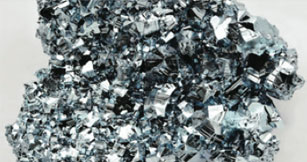

Общее описание
Nanofinder S
3D сканирующий лазерный
конфокальный микроскоп
Одновременный / многофункционалный анализ
— риманоских измерений
— люминесцентные измерения
— измерения лазерного отражения и пропускния
Пространственное разрешение:
— горизонтальной до 200 нм
— осевое до 500 нм

Преимуществом LEA-S500 является возможность анализа химического состава на одном приборе черных, цветных,
особо чистых металлов, ферросплавов и продуктов плавки.
Конфокальный лазерный сканирующий микроскоп (LSM) широко признанн
исследовательским
инструментом.
LSM применяется в биологии и медицине преимущественно с использованием флуоресцентных методов. Другая
важная
область применения - материаловедение, где часто строится изображение с высоким контрастом и
пространственным
разрешением в отраженном лазерном свете. Четкие конфокальные изображения обеспечивают эффективный путь
обнаружения
дефектов в полупроводниковых материалах
LSM применяется в биологии и медицине преимущественно с использованием флуоресцентных методов. Другая
важная
область применения - материаловедение, где часто строится изображение с высоким контрастом и
пространственным
разрешением в отраженном лазерном свете. Четкие конфокальные изображения обеспечивают эффективный путь
обнаружения
дефектов в полупроводниковых материалах
Преимущества
- Высокая светосила
- Полностью автоматизированное управление от ПК
- 4-х позиционная турель (в моделях MS2004 и MS2004i) обеспечивает легкую смену дифракционных решеток
- Низкий уровень рассеянного света, отсутствие переотражений
- Входные и выходные щели с автоматической или ручной регулировкой ширины
- Два выходных порта с автоматизированным переключением
- Возможность одновременной установки различных детекторов
- Оригинальное программное обеспечение для Win'98/2000/XP